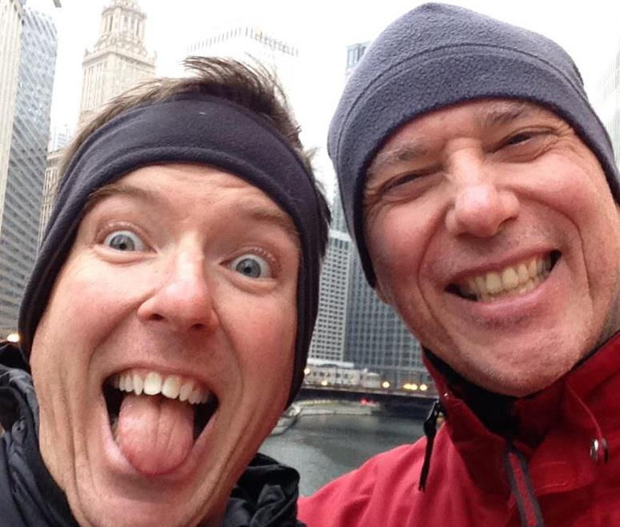

MY VEGAN STORY: DAN HANLEY OF THE GAY VEGANS
September 25, 2013 Time for a new post in the “My Vegan Story” series! Today, Dan Hanley of The Gay Vegans is joining us to share his vegan story. I randomly discovered with The Gay Vegans a few months before I went to Vida Vegan Con. Dan’s compassion and drive is so touching, it was hard not to fall in love with the blog immediately. Then on the first morning of Vida Vegan Con, Chris and I met Dan and we could not get over the amount of love and kindness and positivity that this man exudes. His warm smile feels like a big, comforting hug. A couple months later, Chris and I were lucky enough to meet up with Dan and his equally warm and friendly husband, Mike, on their Southern California vacation and we had an epic meal at Crossroads in West Hollywood. I am so in awe of Dan and his never-ending compassion, kindness and his dedication to being a voice for the voiceless, regardless of the cause, is downright inspiring. I hope you all are just as delighted as I am to hear about Dan’s vegan journey!

WHAT FIRST INSPIRED YOU TO GO VEGAN?
I looked at my dinner plate and realized that it did not match with the compassionate, animal-loving person I was.
DESCRIBE YOUR TRANSITION TO VEGANISM.
My transition went pretty smooth. I held onto Ben and Jerry’s Cherry Garcia ice cream as my last holdout. That lasted a couple of weeks and then I was 100% vegan.
WHAT RESOURCES HELPED YOU IN YOUR TRANSITION?
I wish there had been blogs and more web resources. This was 1996. I was just barely online and the resources there were sparse. I got literature from PETA and found a monthly vegan potluck where I lived which was a huge help.
WERE YOUR FRIENDS AND FAMILY SUPPORTIVE OF YOUR CHOICE TO GO VEGAN? IF THEY WERE NOT SUPPORTIVE, HOW DID YOU DEAL WITH THEM? ARE THEY MORE SUPPORTIVE NOW?
No. Not at all. There wasn’t outright meanness just a lot of disbelief and petty joking. Sometimes that still happens. We have family who will not come visit because they can’t get “real food” in our home. If you’ve had my husband’s cooking you know that it’s a big loss for them! Negative reactions and judgments just don’t have much of an affect on us.
HOW LONG HAVE YOU BEEN VEGAN NOW?
17 years.
IF YOU COULD GIVE YOUR NEWLY VEGAN SELF ONE PIECE OF ADVICE, WHAT WOULD IT BE?
Find a popular-selling vegan cookbook and go for it. Being able to cook at home makes it so much easier as a new vegan.
LINK LOVE
website: thegayvegans.com
twitter: @thegayvegans
facebook: The Gay Vegans